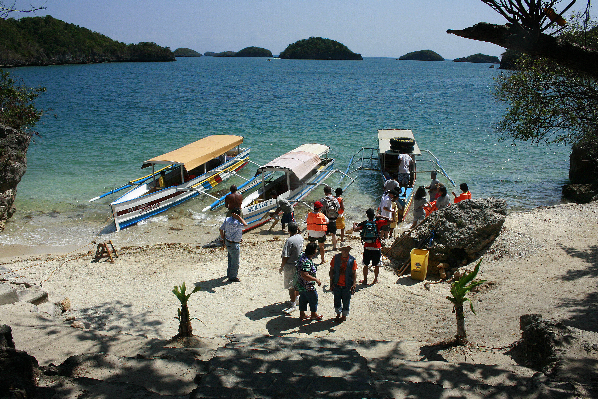

Hundred Islands National Park is a protected group of small limestone islands and islets located in the Lingayen Gulf, off the coast of Alaminos, Pangasinan, Philippines. It is one of the country's oldest national parks and a major ecotourism destination, known for its striking marine landscapes, coral gardens, and recreational activities.
Geography and Formation
Hundred Islands National Park is composed of ancient coral formations that rose from the sea millions of years ago. The islands scatter across clear turquoise waters, each varying in size and shape.
Visitors will notice limestone cliffs, small caves, and white-sand beaches that shift subtly with the tides, creating a dynamic coastal landscape. From elevated viewing points, visitors can appreciate the panorama of clustered islets surrounded by sparkling waters.
Some islands remain largely untouched, offering glimpses of pristine ecosystems while providing opportunities for trekking, cliff diving, and exploration. The combination of natural beauty and rugged terrain makes the park a favorite for nature lovers and photographers.

Biodiversity and Environment
The park supports diverse ecosystems, from coral reefs and seagrass beds to mangrove forests along its shores. These habitats shelter marine life such as reef fish, giant clams, and sea turtles, making it an important site for ecological observation.
Conservation efforts are in place to ensure tourism does not disrupt fragile habitats. Programs include regulating visitor activities, protecting reefs, and encouraging sustainable practices among local communities.
Hundred Islands also offers educational value by helping visitors understand coastal ecosystems and the importance of biodiversity. It combines recreation with awareness of the Philippines' ecological heritage.

Tourism and Attractions
The park's most popular islands, including Governor, Quezon, Marcos, and Children's Islands, offer a variety of natural and recreational attractions. Visitors can swim, snorkel, kayak, and enjoy scenic viewpoints.
Motorized boats from Alaminos Wharf make island hopping accessible, allowing tourists to explore multiple islands in a single day. Each island offers a distinct experience, from quiet beaches to adventurous cliff edges.
Guided tours and recreational facilities make Hundred Islands one of the top ecotourism destinations in the region.

Cultural and Economic Significance
Hundred Islands is more than a natural wonder. It supports local communities through tourism services, boat rentals, and hospitality, creating an important source of livelihood.
The park is also a symbol of Pangasinan's rich natural heritage, drawing attention to the region's ecological and cultural identity. Educational programs and eco-tours help foster a sense of responsibility among tourists and locals alike.
Through sustainable practices, the park shows how economic growth and environmental protection can work together to preserve scenic islands and marine ecosystems for future generations.
